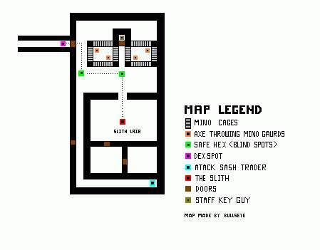

|
| |
| Nork King Mino -5: |
|
Thanks to Seville's Page for the map.
EDGE Guild comments:
Same sort of crits as KM-4 but they seem to hit a bit harder down here and the randoms seem to have better adds. there are not as many zoos. But trust me for a lvl 20 pally 2 minos at once is very scary down here. Look out if you just wander around there are teleport hexes all over this level
|
|  |
| Nork King Mino -5: Slith Lair |
|
Thanks to Seville's Page for the map.
EDGE Guild comments:
Slith always drops at least 1 diamond (150k+ value) and a piece of amber (for robe). She can also drop zaps if she didnt drink them and very very rarely a Slith Potion. It can be sensed to see what type of stat potion it is (random each time she drops it). Roaming Spectre drops a +2 muzi each time and rarely some 3/3 Elephant Boots. All minotaurs, including guards/lords, on this level can drop Mino Bloods, Bloodroots 1-6oz, and axes. All minoguards can drop +5 glowing/silver raxes. All archers can drop +6 glowing/silver proning longbows. All harpies can drop 4/4 es rings of various levels. Rats drop transmute twigs.
|